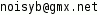

Quh 0.3.1 'Having ears makes sense again' 2005-2006 by NoisyB
This may be freely redistributed under the terms of the GNU Public License
Usage: quh [OPTION]... [PLAYLIST|FILE|-]... [FILTER]...
Option
--start=MS define start of playback in MS (milliseconds (1/1000 s))
MS=15000 play from 15 s
MS=min=1000 play from rnd pos between 1 s and eof INPUT
MS=max=2500 play from rnd pos between 0 s and 2.5 s
--start min=1000:max=2500 would start
playing from random pos between 1 s and 2.5 s
--len=MS define length of playback in MS
MS=15000 play for 15 s
MS=min=1000 play for random time between 1 s and eof INPUT
MS=max=2500 play for random time between 0 s and 2.5 s
--len min=1000:max=2500 would play for
random time between 1 s and 2.5 s
--bpm=BPM define BPM (Beats Per Minute) of playback
exactly like --len but takes BPM instead of MS
and turns them into MS internally
--shuffle shuffle song-list before playing
--random random choice from song-list while playing
--loop[=N] loops song playback N times (default: 0 (forever))
--intro play only 10 s of every song
same as --start=60000 and --len=10000
--rr[=MAX[:MIN]] Random Radio (idea by Benno Hoelle)
MAX segment length in ms (default: 1500)
MIN segment length in ms (default: 500)
same as --start=min=0:max=eof --len=min=MIN:max=MAX
--random --loop
-R play subdirectories recursively
-q be quiet
-v be more verbose
--version output version information and exit
-s output supported formats information and exit
--help display this help and exit
Filter
--new start a new filter chain with read and demux, only
--cache enable cache for smooth playback (default: enabled)
--demux[=CODEC] demux file format (default: auto)
CODEC=0 mp3
CODEC=1 vorbis
CODEC=2 wav
--dec decode (default: enabled)
--console[=UNITS] enable console (default: enabled)
UNITS=0 show time as a clock (default)
UNITS=1 count time in milliseconds (1/1000 s)
UNITS=2 count time in Bytes
UNITS=3 count time in kBits
--id3 read and show ID3 tag
--raw[=FILE] write as raw (1:1) FILE (default: audiodump.raw)
--wav[=FILE] write as wav FILE (default: audiodump.wav)
--stdout write to stdout
--oss[=DEVICE] write to soundcard DEVICE using OSS (default: /dev/dsp)
Please report any problems/ideas/fixes to  or surf to
http://quh.berlios.de